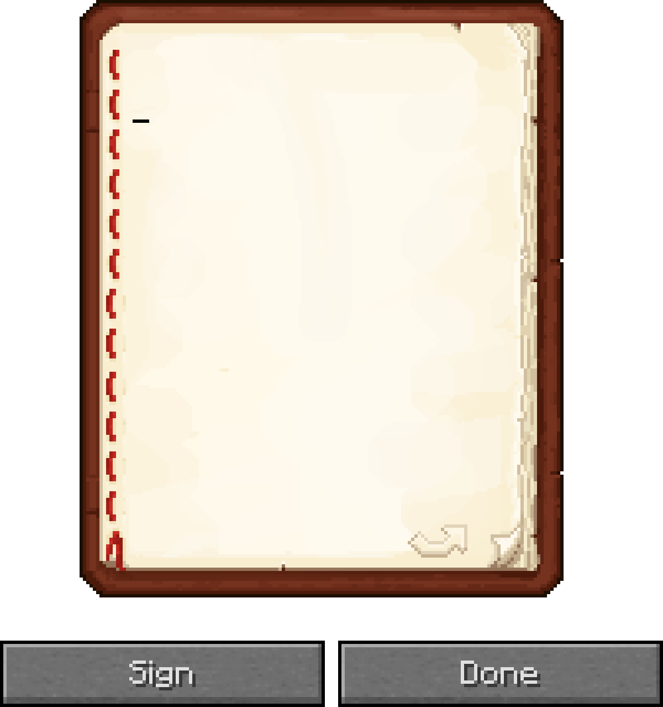
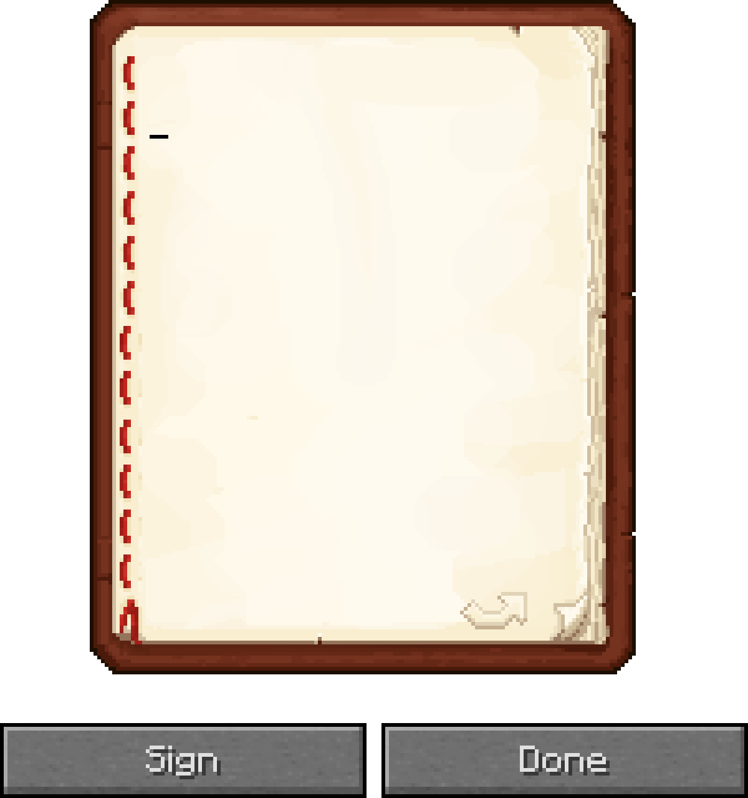
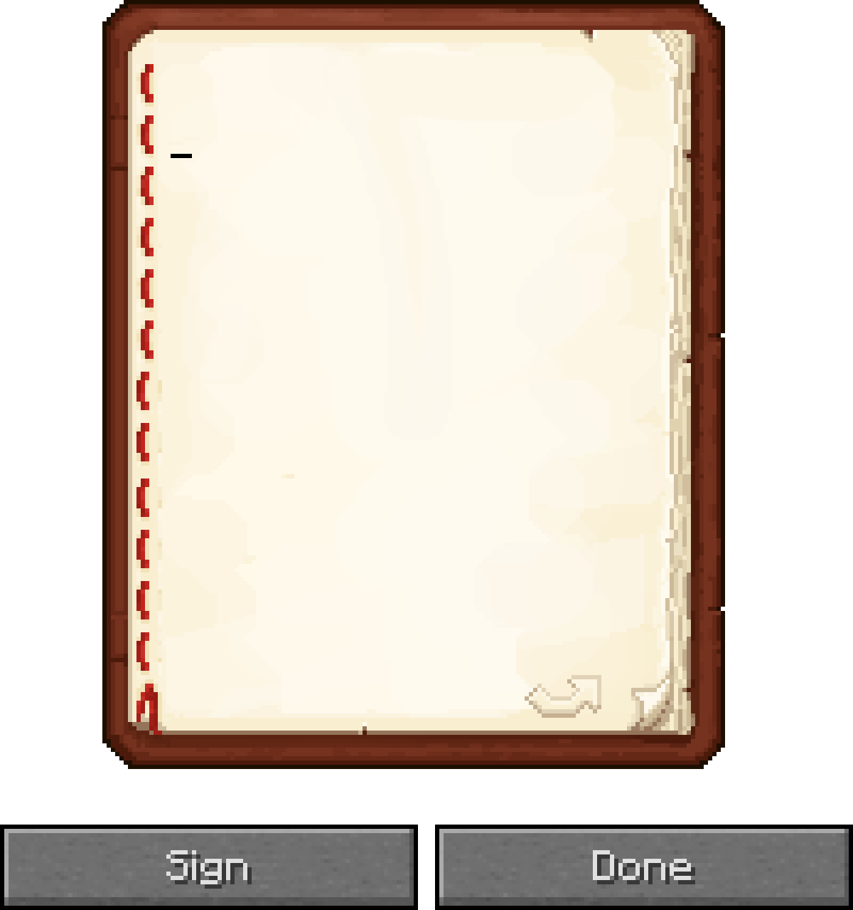
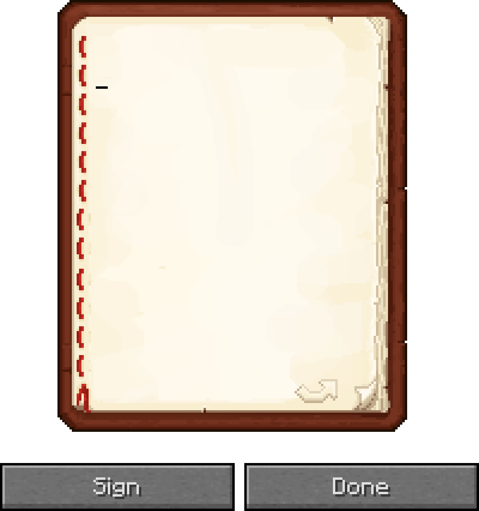

Welcome to the McMeddon Minecraft Lore Timeline!
The full lore plans explained here:
McMeddons Minecraft Worlds Lore Plans
This is NOT the official Minecraft lore,
Select an entry from the left to see its description here.